library(ggplot2)
library(maps)
library(tidyverse)
library(mapproj)
library(doBy)
library(DataCombine)
library(class)
library(caret)
library(e1071)
#import data
beer = read.csv("../data/Beers.csv")
brewery = read.csv("../data/Breweries.csv")
#Note: US Population data was pulled from https://en.wikipedia.org/wiki/List_of_states_and_territories_of_the_United_States_by_population on 1/17/2020
us_pop = read.csv("../data/US_Population.csv")Answer: AK AL AR AZ CA CO CT DE FL GA HI IA ID IL IN KS KY LA MA MD ME MI MN MO MS MT NC ND NE 7 3 2 11 39 47 8 2 15 7 4 5 5 18 22 3 4 5 23 7 9 32 12 9 2 9 19 1 5 NH NJ NM NV NY OH OK OR PA RI SC SD TN TX UT VA VT WA WI WV WY 3 3 4 2 16 15 6 29 25 5 4 1 3 28 4 16 10 23 20 1 4
# remove Washington DC for plotting in the map
brewery2 = brewery[-c(228),]
brewery2$State <- factor(brewery2$State)
# Counts of breweries in each state
summary(brewery2$State)## AK AL AR AZ CA CO CT DE FL GA HI IA ID IL IN KS KY LA MA MD ME MI MN MO MS
## 7 3 2 11 39 47 8 2 15 7 4 5 5 18 22 3 4 5 23 7 9 32 12 9 2
## MT NC ND NE NH NJ NM NV NY OH OK OR PA RI SC SD TN TX UT VA VT WA WI WV WY
## 9 19 1 5 3 3 4 2 16 15 6 29 25 5 4 1 3 28 4 16 10 23 20 1 4lookup = data.frame(abb = state.abb, State = state.name) #makes a data frame with State name and abbreviation.
colnames(brewery2)[4] = "abb" # Change Column Name
brewery_merged <-
left_join(brewery2, lookup, by = 'abb')
# plot on heatmap
brewery2 = merge(brewery2,lookup,"abb") # make one dataset with state names and abb
breweryMapData = count(brewery2,State) #count up the occurance of each state.
colnames(breweryMapData)[2] = "Breweries" #change "n" to "Breweries"
breweryMapData$region <- tolower(breweryMapData$State)
breweryMapData2 = breweryMapData[-1]
states <- map_data("state")
map.df <- merge(states,breweryMapData2, by="region", all.x=T)
map.df <- map.df[order(map.df$order),]
ggplot(map.df, aes(x=long,y=lat,group=group))+
geom_polygon(aes(fill=Breweries))+
geom_path()+
scale_fill_gradientn(colours=rev(heat.colors(10)),na.value="grey90")+ggtitle("Breweries by State")+
coord_map()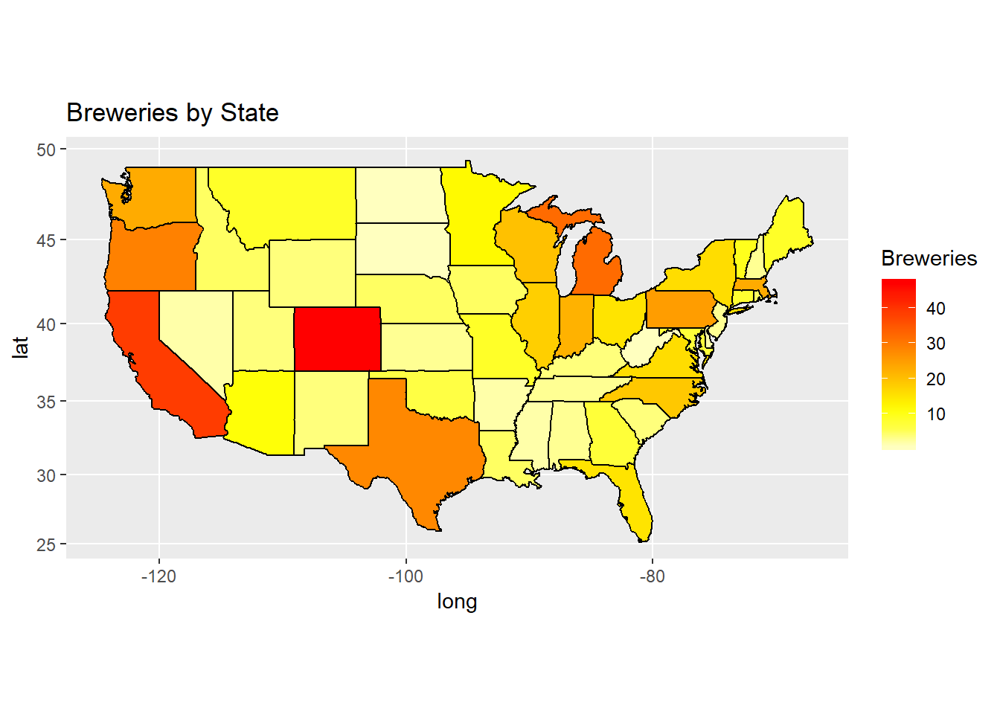
#merge brew id between tables
#rename beer brew_id column to Brew_ID
colnames(beer)[5] = "Brew_ID"
beer_brew <-
left_join(brewery, beer, by = 'Brew_ID')
colnames(beer_brew)[2] = "Brewery Name" # Change Column Name
colnames(beer_brew)[5] = "Beer Name" # Change Column Name
head(beer_brew, 6)## Brew_ID Brewery Name City State Beer Name Beer_ID ABV
## 1 1 NorthGate Brewing Minneapolis MN Get Together 2692 0.045
## 2 1 NorthGate Brewing Minneapolis MN Maggie's Leap 2691 0.049
## 3 1 NorthGate Brewing Minneapolis MN Wall's End 2690 0.048
## 4 1 NorthGate Brewing Minneapolis MN Pumpion 2689 0.060
## 5 1 NorthGate Brewing Minneapolis MN Stronghold 2688 0.060
## 6 1 NorthGate Brewing Minneapolis MN Parapet ESB 2687 0.056
## IBU Style Ounces
## 1 50 American IPA 16
## 2 26 Milk / Sweet Stout 16
## 3 19 English Brown Ale 16
## 4 38 Pumpkin Ale 16
## 5 25 American Porter 16
## 6 47 Extra Special / Strong Bitter (ESB) 16tail(beer_brew, 6)## Brew_ID Brewery Name City State
## 2405 556 Ukiah Brewing Company Ukiah CA
## 2406 557 Butternuts Beer and Ale Garrattsville NY
## 2407 557 Butternuts Beer and Ale Garrattsville NY
## 2408 557 Butternuts Beer and Ale Garrattsville NY
## 2409 557 Butternuts Beer and Ale Garrattsville NY
## 2410 558 Sleeping Lady Brewing Company Anchorage AK
## Beer Name Beer_ID ABV IBU Style
## 2405 Pilsner Ukiah 98 0.055 NA German Pilsener
## 2406 Heinnieweisse Weissebier 52 0.049 NA Hefeweizen
## 2407 Snapperhead IPA 51 0.068 NA American IPA
## 2408 Moo Thunder Stout 50 0.049 NA Milk / Sweet Stout
## 2409 Porkslap Pale Ale 49 0.043 NA American Pale Ale (APA)
## 2410 Urban Wilderness Pale Ale 30 0.049 NA English Pale Ale
## Ounces
## 2405 12
## 2406 12
## 2407 12
## 2408 12
## 2409 12
## 2410 12ABV and IBU have 62 and 1005 missing values respectively
# count the missing values in each column
colSums(is.na(beer_brew))## Brew_ID Brewery Name City State Beer Name
## 0 0 0 0 0
## Beer_ID ABV IBU Style Ounces
## 0 62 1005 0 0# ibu is right skewed, but almost half of the data are na values. This will be an issue.
hist(beer_brew$IBU)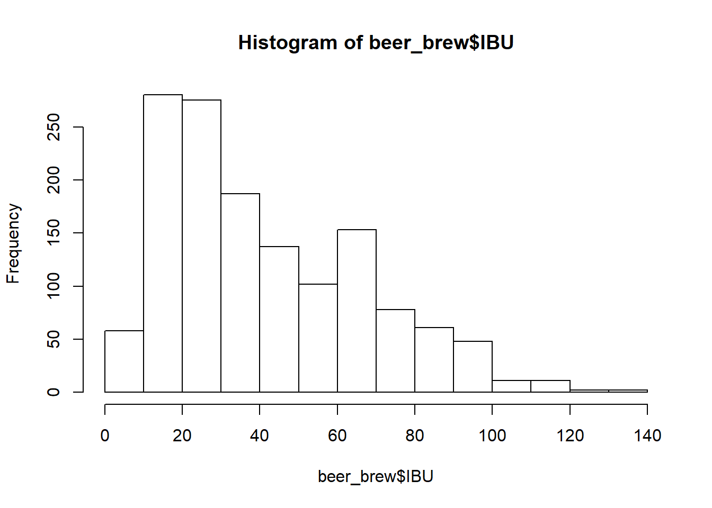
# abv is normal with little skew, we are ok to use the mean to replace
# we will not be replacing the missing values since there are so few for abv
# we will not be replacing the missing values for IBU since there are so many
replace_abv = FALSE
hist(beer_brew$ABV)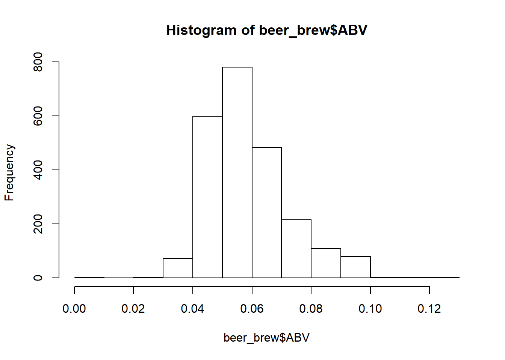
if( replace_abv == TRUE )
{
beer_brew$ABV[is.na(beer_brew$ABV)] <- with(beer_brew, ave(ABV,
FUN = function(x) mean(x, na.rm = TRUE)))[is.na(beer_brew$ABV)]
sum(is.na(beer_brew$ABV))
hist(beer_brew$ABV)
}# drop rows without IBU values
beer_brew_dropped_IBU <- beer_brew %>% drop_na(IBU)
# get the median values and sort them high to low
beer_brew_dropped_IBU_sorted <-
beer_brew_dropped_IBU %>%
group_by(State) %>%
summarise(median_ibu = median(IBU) )
beer_brew_dropped_IBU_sorted <- beer_brew_dropped_IBU_sorted[order(-beer_brew_dropped_IBU_sorted$median_ibu),]
##
## plot median IBU in map
##
colnames(beer_brew_dropped_IBU_sorted)[1] = "abb" # Change Column Name
# plot on heatmap
IBU_merged = merge(beer_brew_dropped_IBU_sorted,lookup,"abb") # make one dataset with state names and abb
colnames(IBU_merged)[2] = "Median_IBU" #change "n" to "Median IBU"
IBU_merged$region <- tolower(IBU_merged$State)
IBU_merged2 = IBU_merged[-1]
states <- map_data("state")
map.df <- merge(states,IBU_merged2, by="region", all.x=T)
map.df <- map.df[order(map.df$order),]
ggplot(map.df, aes(x=long,y=lat,group=group))+
geom_polygon(aes(fill=Median_IBU))+
geom_path()+
scale_fill_gradientn(colours=rev(heat.colors(10)),na.value="grey90")+ggtitle("Median IBU by State")+
coord_map()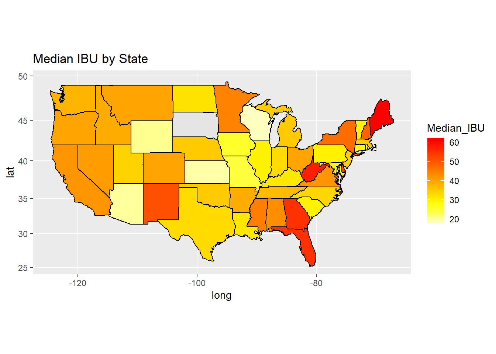
# drop ABV rows without median
beer_brew_dropped_ABV <- beer_brew %>% drop_na(ABV)
# calculate the median values for abv then sort them high to low
beer_brew_dropped_ABV_sorted <-
beer_brew_dropped_ABV %>%
group_by(State) %>%
summarise(median_abv = median(ABV) )
beer_brew_dropped_ABV_sorted <- beer_brew_dropped_ABV_sorted[order(-beer_brew_dropped_ABV_sorted$median_abv),]
##
## plot median abv
##
colnames(beer_brew_dropped_ABV_sorted)[1] = "abb" # Change Column Name
# Scale abv to a percentage value to increase readability
beer_brew_dropped_ABV_sorted$median_abv = beer_brew_dropped_ABV_sorted$median_abv * 100.0
# plot on heatmap
ABV_merged = merge(beer_brew_dropped_ABV_sorted,lookup,"abb") # make one dataset with state names and abb
colnames(ABV_merged)[2] = "Median_ABV" #change "n" to "Median ABV"
ABV_merged$region <- tolower(ABV_merged$State)
ABV_merged2 = ABV_merged[-1]
states <- map_data("state")
map.df <- merge(states,ABV_merged2, by="region", all.x=T)
map.df <- map.df[order(map.df$order),]
ggplot(map.df, aes(x=long,y=lat,group=group))+
geom_polygon(aes(fill=Median_ABV))+
geom_path()+
scale_fill_gradientn(colours=rev(heat.colors(10)),na.value="grey90")+ggtitle("Median ABV by State")+
coord_map()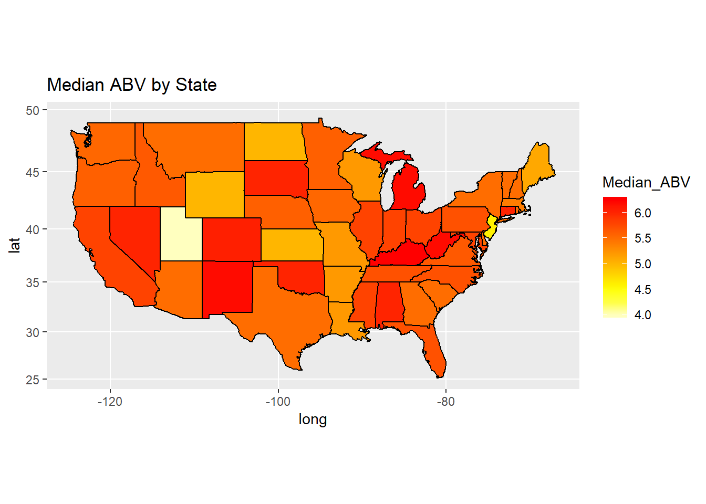
# calculate the maximum IBU in each state
max_IBU <- beer_brew_dropped_IBU %>%
group_by(State) %>%
summarise(mx = max(IBU) )
#Oregon has the max IBU at 138
##
## plot max ibu
##
colnames(max_IBU)[1] = "abb" # Change Column Name
max_IBU_merged = merge(max_IBU,lookup,"abb") # make one dataset with state names and abb
colnames(max_IBU_merged)[2] = "Max_IBU" #change "n" to "Max_IBU"
max_IBU_merged$region <- tolower(max_IBU_merged$State)
max_IBU_merged2 = max_IBU_merged[-1]
states <- map_data("state")
map.df <- merge(states,max_IBU_merged2, by="region", all.x=T)
map.df <- map.df[order(map.df$order),]
ggplot(map.df, aes(x=long,y=lat,group=group))+
geom_polygon(aes(fill=Max_IBU))+
geom_path()+
scale_fill_gradientn(colours=rev(heat.colors(10)),na.value="grey90")+ggtitle("Max IBU by State")+
coord_map()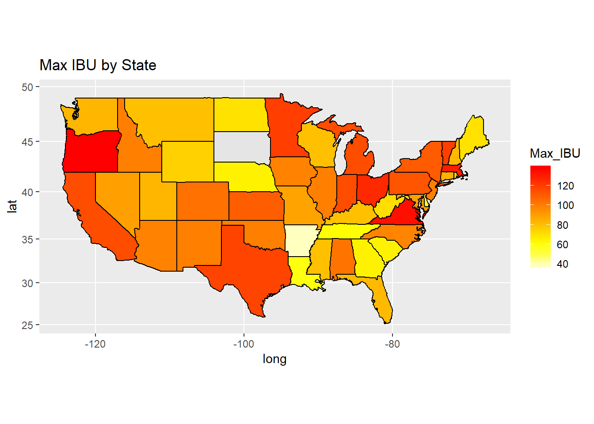
# copy the dataset from earlier and scale ABV to a percentage value for readability
max_ABV <- beer_brew_dropped_ABV
max_ABV$ABV <- max_ABV$ABV * 100.0
# calculate the maximum value in each state
max_ABV <- max_ABV %>%
group_by(State) %>%
summarise(mx = max(ABV) )
##
## plot max abv
##
colnames(max_ABV)[1] = "abb" # Change Column Name
max_ABV_merged = merge(max_ABV,lookup,"abb") # make one dataset with state names and abb
colnames(max_ABV_merged)[2] = "Max_ABV_Percentage" #change "n" to "Max_ABV"
max_ABV_merged$region <- tolower(max_ABV_merged$State)
max_ABV_merged2 = max_ABV_merged[-1]
states <- map_data("state")
map.df <- merge(states,max_ABV_merged2, by="region", all.x=T)
map.df <- map.df[order(map.df$order),]
ggplot(map.df, aes(x=long,y=lat,group=group))+
geom_polygon(aes(fill=Max_ABV_Percentage))+
geom_path()+
scale_fill_gradientn(colours=rev(heat.colors(10)),na.value="grey90")+ggtitle("Max ABV Percentage by State")+
coord_map()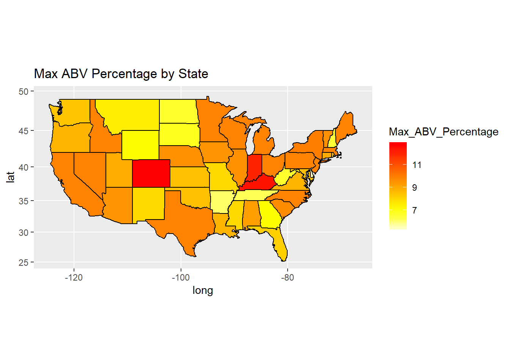
# generate scatter plot between IBU and ABV
scatter <- ggplot(beer, aes(IBU, ABV))
scatter +
ggtitle("Alcohol content by volume vs International bitterness unit") +
geom_point() +
geom_smooth(method = "lm", colour = "Red", se = F) +
labs(x = "International bitterness unit", y = "Alcohol content by volume") ## Warning: Removed 1005 rows containing non-finite values (stat_smooth).## Warning: Removed 1005 rows containing missing values (geom_point).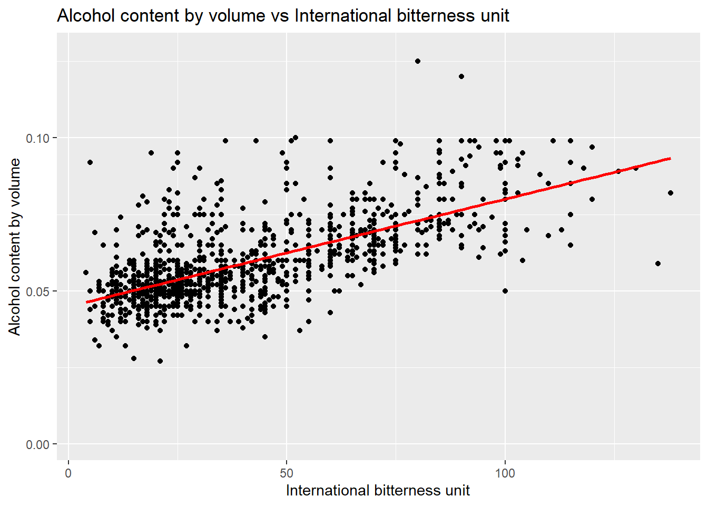
# create a linear model of the relationship and print a summary about it
beer.lm = lm(ABV ~ IBU, data=beer)
summary(beer.lm)##
## Call:
## lm(formula = ABV ~ IBU, data = beer)
##
## Residuals:
## Min 1Q Median 3Q Max
## -0.033288 -0.005946 -0.001595 0.004022 0.052006
##
## Coefficients:
## Estimate Std. Error t value Pr(>|t|)
## (Intercept) 4.493e-02 5.177e-04 86.79 <2e-16 ***
## IBU 3.508e-04 1.036e-05 33.86 <2e-16 ***
## ---
## Signif. codes: 0 '***' 0.001 '**' 0.01 '*' 0.05 '.' 0.1 ' ' 1
##
## Residual standard error: 0.01007 on 1403 degrees of freedom
## (1005 observations deleted due to missingness)
## Multiple R-squared: 0.4497, Adjusted R-squared: 0.4493
## F-statistic: 1147 on 1 and 1403 DF, p-value: < 2.2e-16#based on the scatterplot for the data that contain both IBU and ABV, it looks like there is a moderate positive linear relation shipi between the two variables. r2= 0.4493 # find any styles that have " IPA" in them and save them to a new dataframe
ipa_beers <- grepl.sub(beer, " {0,1}\\({0,1}[iI][pP][aA]\\){0,1} {0,1}", c("Style"), keep.found = TRUE)
ipa_beers$Style = 'IPA'
# find any styles that have " ALE" in them and rename to ALE
ale_beers <- grepl.sub(beer, " {0,1}[aA][lL][eE] {0,1}", c("Style"), keep.found = TRUE)
# remove subset of beers that contain IPA in the style
ale_beers <- grepl.sub(ale_beers, " {0,1}\\({0,1}[iI][pP][aA]\\){0,1} {0,1}", c("Style"), keep.found = FALSE)
ale_beers$Style = 'ALE'
# 70% training data 30% test data
split_perc = 0.7
set.seed(6)
# combine the remaining ipa and ale beers to form the base dataset
knn_beers <- rbind(ipa_beers, ale_beers)
# select only the used columns
knn_beers <- knn_beers %>% select("ABV", "IBU", "Style")
knn_beers$IBU <- as.numeric(knn_beers$IBU)
# remove any NA values for IBU and ABV
knn_beers_dropmv <- knn_beers%>% drop_na(IBU,ABV)
# split the dataset into training and testing datasets
trainIndices = sample(1:dim(knn_beers_dropmv)[1],round(split_perc * dim(knn_beers_dropmv)[1]))
train_beers = knn_beers_dropmv[trainIndices,]
test_beers = knn_beers_dropmv[-trainIndices,]
# typical k value should be sqrt of the number of samples in your dataset
k_value = ceiling(sqrt(length(train_beers$Style)))
#convert column to factor
train_beers$Style <- as.factor(train_beers$Style)
# create scatterplot with labels for ales and ipas
knn_beers_dropmv %>% ggplot(aes(x=IBU, ABV, color=Style)) +
geom_point()+ggtitle("ABV vs IBU Classification")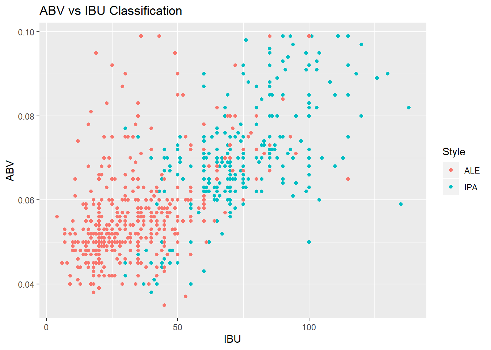
# create knn model and evaluate the fit
classifications = knn(train_beers[,c(1,2)],test_beers[,c(1,2)],train_beers$Style, prob = TRUE, k = k_value)
class_table <- table(classifications,test_beers$Style)
confusionMatrix(class_table)## Confusion Matrix and Statistics
##
##
## classifications ALE IPA
## ALE 151 28
## IPA 19 91
##
## Accuracy : 0.8374
## 95% CI : (0.7897, 0.878)
## No Information Rate : 0.5882
## P-Value [Acc > NIR] : <2e-16
##
## Kappa : 0.6604
##
## Mcnemar's Test P-Value : 0.2432
##
## Sensitivity : 0.8882
## Specificity : 0.7647
## Pos Pred Value : 0.8436
## Neg Pred Value : 0.8273
## Prevalence : 0.5882
## Detection Rate : 0.5225
## Detection Prevalence : 0.6194
## Balanced Accuracy : 0.8265
##
## 'Positive' Class : ALE
## # change the state values to lower case
us_pop$region <- tolower(us_pop$State)
# join the us population data with the brewery count data from before
brewery_pop <- left_join(breweryMapData2, us_pop, by="region")
# scale the beweries to match the proportion of the united states population
brewery_pop$Breweries_Scaled <- brewery_pop$Percent * brewery_pop$Breweries
# plot the scaled brewery counts
states <- map_data("state")
map.df <- merge(states,brewery_pop, by="region", all.x=T)
map.df <- map.df[order(map.df$order),]
ggplot(map.df, aes(x=long,y=lat,group=group))+
geom_polygon(aes(fill=Breweries_Scaled))+
geom_path()+
scale_fill_gradientn(colours=rev(heat.colors(10)),na.value="grey90")+ggtitle("Breweries Per Capita")+
coord_map()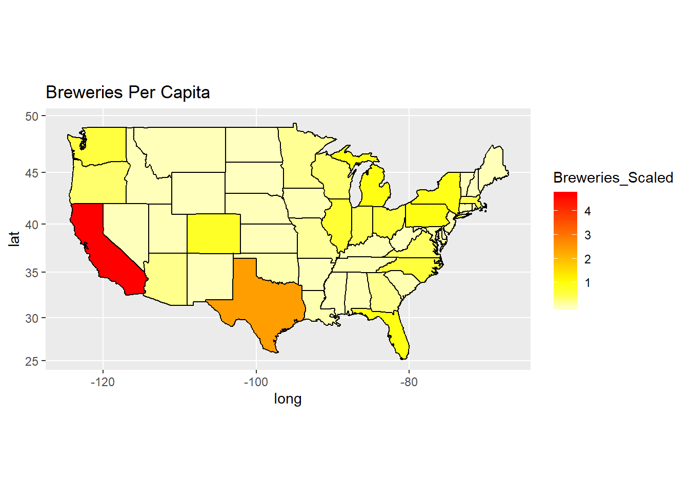
6. Comment on the summary statistics and distribution of the ABV variable.
Beer ABV’s are slightly right skewed (probably since people like to have stronger beers) and mostly normally distributed. There is a peak around 0.05 which could be the maximum beer strength to sell in specific states’ grocery stores. For reference: at least colorado, Utah, and Minnesota have laws that restrict the abv to less than 5% for grocery store sales.
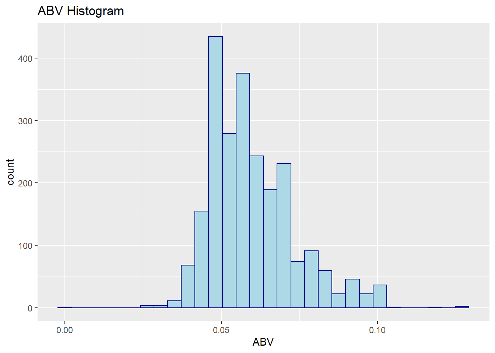